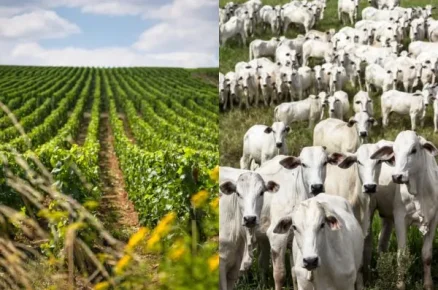

Agricultura é um dos pilares fundamentais da sociedade, pois fornece os alimentos que sustentam a vida humana e animal. Desde os primórdios da civilização, o homem depende da agricultura para sobreviver e evoluir. Vamos explorar os principais aspectos que tornam a agricultura uma atividade tão relevante para a humanidade:
A agricultura é uma atividade milenar que teve início há cerca de 10.000 anos, com o surgimento da agricultura de subsistência nas regiões do Crescente Fértil, no Oriente Médio. Ao longo dos séculos, a agricultura evoluiu, mas sua importância permanece a mesma: produzir alimentos para atender às necessidades básicas da população.
A produção de alimentos é a principal função da agricultura. Sem a produção agrícola em larga escala, não seria possível alimentar a população mundial em constante crescimento. A agricultura também garante a segurança alimentar em muitas regiões do mundo.
A agricultura não se restringe apenas à produção de alimentos. Ela também fornece matérias-primas para a indústria.Muitas indústrias dependem de produtos agrícolas para fabricar seus produtos. Em resumo, a agricultura é essencial para o bem-estar da população, o desenvolvimento econômico e social, e a segurança alimentar global. 🌾🌎